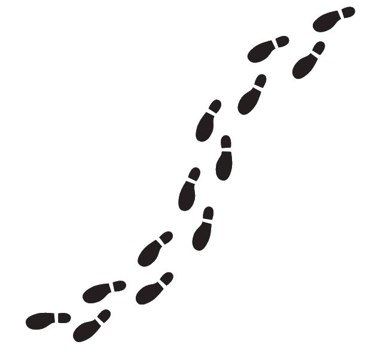

This is our recommended route with beautiful views, delicious food, and relaxing nature all around Kaunas
Begin with a quick breakfast in Bernelių užeiga, after you've eaten head to Aleksotas Funicular Railway.
K. Donelaičio g. 11, Kaunas
Bernelių užeiga
Traditional Lithuanian restaurant offering local dishes in a rustic setting. Known for its authentic flavors, cozy atmosphere, and attentive service.
★★★★★
Upon arriving Aleksotas Funicular Railway head up with the railway you'll see an incredible view of Kaunas and all of its beauty. Then take a bus to First Fort of Kaunas Fortress.
Amerikos Lietuvių g. 6, Kaunas
Aleksotas Funicular Railway
Historic funicular operating since 1935, preserving original wooden cars and traction system. Ascends to a panoramic viewpoint over the Old Town; journey lasts just over a minute.
★★★★★
Once you're here you can explore, admire the nature and architecture. After you're done head to Marvelė cascade.
Šiltnamių g., Noreikiškės
The First Fort
19th-century military fort with a pentagonal layout, partially flooded and overgrown. Hosts tours, art installations, and equestrian events.
★★★★★
It has a stunning cascade, nature. You can take some great pictures here. And for the last place head to Monte Pacis.
Julijanavos g., Kaunas
Marvelė cascade.
Stone cascades flow through a forested ravine with a small bridge, benches, and amphitheater. Peaceful in summer, dramatic after rain. A quick escape into nature near the city.
★★★★★

You can order some food here, rent a room to stay overnight or even go explore Pažaislio vienuolynas and its park.
T. Masiulio g. 31, Kaunas
Monte Pacis
Features ornate church, small museum, lakeside views, and cultural events. Peaceful atmosphere with guided tours and occasional concerts.